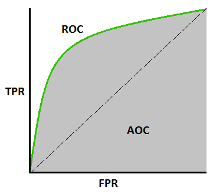
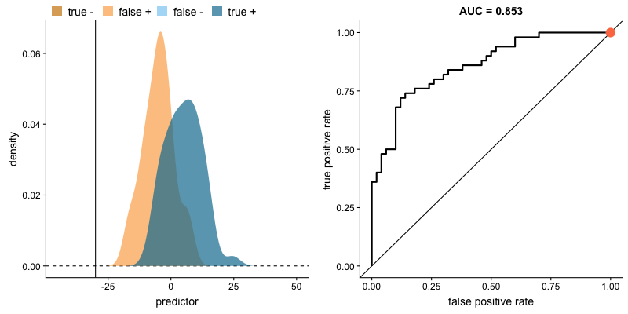
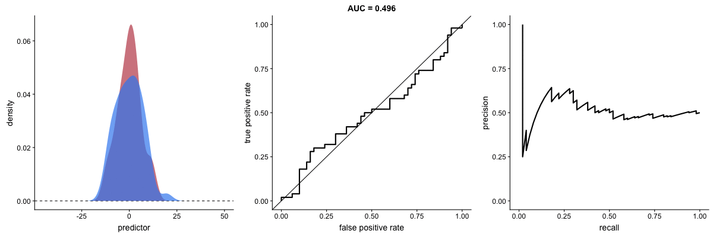
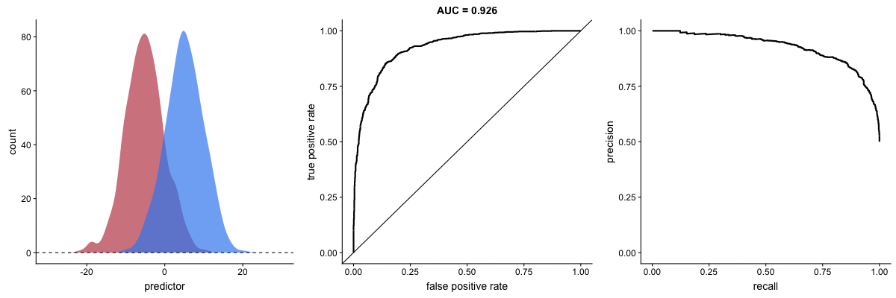

The Precision-Recall Plot Is More Informative than the ROC Plot
An introduction to performance metrics for binary classification. Originally published on paulvanderlaken.com.
ROC, AUC, precision and recall visually explained
A receiver operating characteristic (ROC) curve displays how well a model can classify binary outcomes. An ROC curve is generated by plotting the false positive rate of a model against its true positive rate, for each possible cutoff value. Often, the area under the curve (AUC) is calculated and used as a metric showing how well a model can classify data points.
If you’re interest in learning more about ROC and AUC, I recommend this short Medium blog, which contains this neat graphic.

Dariya Sydykova, graduate student at the Wilke lab at the University of Texas at Austin, shared some great visual animations of how model accuracy and model cutoffs alter the ROC curve and the AUC metric. The quotes and animations are from the associated github repository.
ROC & AUC
The plot on the left shows the distributions of predictors for the two outcomes, and the plot on the right shows the ROC curve for these distributions. The vertical line that travels left-to-right is the cutoff value. The red dot that travels along the ROC curve corresponds to the false positive rate and the true positive rate for the cutoff value given in the plot on the left.
The traveling cutoff demonstrates the trade-off between trying to classify one outcome correctly and trying to classify the other outcome correcly. When we try to increase the true positive rate, we also increase the false positive rate. When we try to decrease the false positive rate, we decrease the true positive rate.

The shape of an ROC curve changes when a model changes the way it classifies the two outcomes.
The animation [below] starts with a model that cannot tell one outcome from the other, and the two distributions completely overlap (essentially a random classifier). As the two distributions separate, the ROC curve approaches the left-top corner, and the AUC value of the curve increases. When the model can perfectly separate the two outcomes, the ROC curve forms a right angle and the AUC becomes 1.

Precision-recall
Two other metrics that are often used to quantify model performance are precision and recall.
Precision (also called positive predictive value) is defined as the number of true positives divided by the total number of positive predictions. Hence, precision quantifies what percentage of the positive predictions were correct: How correct your model’s positive predictions were.
Recall (also called sensitivity) is defined as the number of true positives divided by the total number of true postives and false negatives (i.e. all actual positives). Hence, recall quantifies what percentage of the actual positives you were able to identify: How sensitive your model was in identifying positives.
Dariya also made some visualizations of precision-recall curves: precision-recall curves also displays how well a model can classify binary outcomes. However, it does it differently from the way an ROC curve does. Precision-recall curve plots true positive rate (recall or sensitivity) against the positive predictive value (precision).
In the middle, here below, the ROC curve with AUC. On the right, the associated precision-recall curve. Similarly to the ROC curve, when the two outcomes separate, precision-recall curves will approach the top-right corner. Typically, a model that produces a precision-recall curve that is closer to the top-right corner is better than a model that produces a precision-recall curve that is skewed towards the bottom of the plot.

Class imbalance
Class imbalance happens when the number of outputs in one class is different from the number of outputs in another class. For example, one of the distributions has 1000 observations and the other has 10. An ROC curve tends to be more robust to class imbalanace that a precision-recall curve.
In this animation [below], both distributions start with 1000 outcomes. The blue one is then reduced to 50. The precision-recall curve changes shape more drastically than the ROC curve, and the AUC value mostly stays the same. We also observe this behaviour when the other disribution is reduced to 50.

Here’s the same, but now with the red distribution shrinking to just 50 samples.